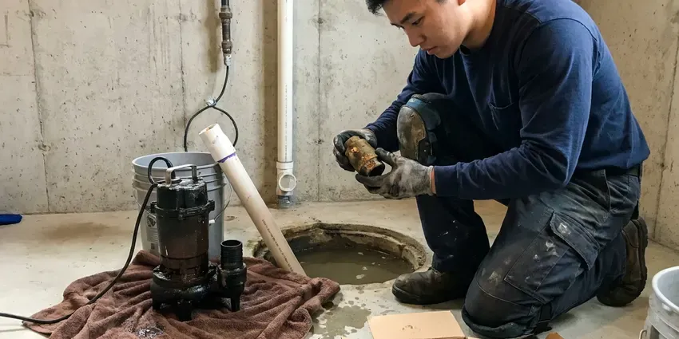
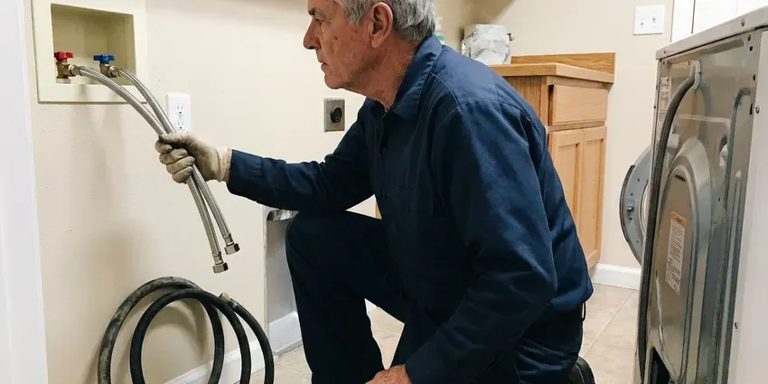

Hot Water Tank Maintenance in Syracuse, NY
Protect your investment and energy bill in Syracuse, NY with professional hot water tank maintenance. HCL Plumbing helps prevent costly repairs.
- Fast, Reliable Service
- Gas and Electric Tanks
- Licensed New York Plumbers
- Serving All of New York

Book Yearly Hot Water Tank Maintenance in Syracuse, NY.
One visit clears sediment, checks the anode and confirms your relief valve works.
Hot Water Tank Maintenance That Fights Hard Water in Syracuse, NY
HCL Plumbing maintains gas and electric storage tanks from 30 to 80 gallons. We drain and flush calcium sediment, pull and measure the anode rod, test the temperature and pressure relief valve and check the venting or elements. Most tanks we service are back online in about an hour.
Our expertise includes:
- Anode rod inspection and replacement
- Complete sediment flushing and cleaning
- Pressure relief valve testing and repair

Additional Plumbing Maintenance Services in Syracuse, NY
Our maintenance and specialty plumbing services in Syracuse, NY protect your home year-round and extend the life of every system.



Syracuse sump pump maintenance specialists


Customers
Why Choose HCL Plumbing for Hot Water Tank Maintenance in Syracuse, NY?
Choosing HCL Plumbing for your hot water tank maintenance means choosing peace of mind. Our seasoned plumbers understand the specific needs of hot water systems in New York.
- Ensure Safety, Maintenance includes checking critical safety components like the pressure relief valve, safeguarding your home from potential hazards.
- Extend Lifespan, Proper care and regular inspections can significantly prolong the life of your hot water tank, delaying costly replacements.
- Sediment Specialists, We break up and flush out the scale layer that causes popping and rumbling noises.
Citywide Coverage
From downtown to the quiet suburbs of Syracuse, our technicians are readily available to provide timely and efficient hot water tank maintenance services. We cover the entire Syracuse area for your convenience.
Experienced Team
When you choose HCL Plumbing, you're getting skilled professionals who understand the nuances of hot water tank systems and are dedicated to performing thorough, effective maintenance.
Safety-First Approach
Safety comes first in all our hot water tank maintenance services. We adhere to all local and state plumbing codes, so every component is inspected and serviced to the highest safety standards.
Trusted Certified Syracuse Plumbing Services Professionals
At HCL Plumbing, we take pride in providing certified plumbing services throughout Syracuse, NY. Backed by recognized industry credentials, our experienced plumbers combine technical skill with genuine customer care. Whether it is repair, installation, or maintenance, we follow strict safety and quality standards to deliver long-lasting results you can trust.
Call Us Now PHCC Plumbing Contractor Recognition
PHCC Plumbing Contractor Recognition Better Business Bureau (BBB) Accreditation
Better Business Bureau (BBB) Accreditation Angi Certified Pro
Angi Certified Pro ISO 9001 Quality Management Certification
ISO 9001 Quality Management CertificationDependable Hot Water Tank Maintenance Services in Syracuse, NY
Gas Burner and Venting Tune-Up in Syracuse, NY
On gas tanks we clean the burner, inspect the thermocouple or flame sensor and look for soot, rust flakes or scorching around the combustion chamber. We check the draft hood and vent connector for proper slope and secure joints. Dust and lint from garages can block the flame arrestor screen on newer FVIR models, which causes the pilot to drop out. A clean burner gives a stable blue flame and lower gas bills.

Commercial Hot Water Tank Maintenance in Syracuse, NY
Businesses in Syracuse, NY rely heavily on consistent hot water for their operations. Our commercial hot water tank maintenance services are tailored to the higher demands of commercial units. We provide complete inspections, flushing and component checks so your business avoids costly downtime from hot water system failures. Keeping your commercial hot water tank in peak condition is important for customer satisfaction and smooth operations.
Standard Hot Water Tank Tune-Up in Syracuse
HCL Plumbing offers a complete tune-up for conventional hot water tanks, focusing on critical components. This includes draining the tank to remove sediment buildup, which is crucial wherever water carries minerals, and inspecting the anode rod for signs of corrosion. We also check heating elements, thermostat settings and all pipe connections for leaks. Our goal is to optimize your tank's performance and prevent future issues.
Pressure Relief Valve Testing in Syracuse
A properly functioning temperature and pressure relief (T&P) valve is a crucial safety device for any hot water tank. Our technicians will test this valve to confirm it's not stuck or leaking, preventing dangerous pressure buildup within the tank. We verify it opens and closes correctly, and if it fails, we will recommend immediate replacement to keep your Syracuse home safe and compliant with plumbing codes.
Anode Rod Inspection & Replacement in Syracuse, NY
The anode rod is your hot water tank's sacrificial defense against corrosion. Private wells serve a large share of rural homes, and they can carry iron, sulfur or hardness that stains fixtures and clogs filters. During our maintenance, we pull and inspect the anode rod. If it's badly depleted, we recommend and perform a replacement to extend the life of your tank in Syracuse, NY, preventing rust from eating away at the tank lining.
Electric Element and Thermostat Service in Syracuse
Electric tanks rely on upper and lower heating elements that get crusted with scale in hard water. We test each element with a meter, check the thermostats and look for scorched wires at the terminal block. If an element has failed we replace it with the matching wattage and voltage. Plenty of families who think they need a new heater just need a lower element and a flush.
Standard Hot Water Tank Flushing in Syracuse
Sediment buildup is a common issue in hot water tanks, especially where water hardness runs high. Our standard flushing service removes these mineral deposits, which can reduce efficiency and lead to premature tank failure. We drain the tank completely, flush out all sediment and refill it, giving you clear water flow and improved heating performance. This routine service is crucial for extending the life of your unit.

Relief Valve and Expansion Tank Testing in Syracuse
The temperature and pressure relief valve is the part that keeps a tank from becoming dangerous. We lift the lever, confirm it opens and reseats and check the discharge line for proper material and termination. We also check your thermal expansion tank pressure with a gauge, since a waterlogged expansion tank lets pressure jump every heating cycle. High street pressure is common in many service areas, so we test static pressure at a hose bib too.
Hot Water Tank Maintenance Near Me in Syracuse, NY
We are deeply familiar with the plumbing and hot water tank requirements of homes and businesses across Syracuse. This local experience means that our maintenance services are not just effective, but also tailored to the conditions of our New York community.
Local service matters because local water matters. Our team sees the scale levels in Syracuse homes firsthand and tailors flushing and anode choices to match. You get a maintenance plan built for your water, not a one-size-fits-all checklist.
HCL Plumbing at a Glance
- Licensed and insured plumbers serving Syracuse, NY
- Same-day appointments and 24/7 emergency response
- Upfront, flat-rate pricing before work begins
- 4.8-star rated by 520+ New York customers
Syracuse Map
Syracuse Information
- Population
- 145,560
- Area codes
- 315/680/585
- Service area
- Syracuse and communities within 40 miles
- Nearby
- Utica, Binghamton, Irondequoit, Rochester
Regular hot water tank maintenance is important for homes in Syracuse, NY to control sediment buildup from local water conditions and keep the unit running smoothly through every season, preventing unexpected failures.
Expert Services
Trust our professionals for reliable HCL Plumbing solutions in Syracuse, NY.
Our Specialized Plumbing Services in Syracuse, NY
At HCL Plumbing, we provide a complete range of plumbing services across Syracuse, NY. From leak detection to full system installations, our team ensures fast, precise, and affordable service for both residential and commercial properties. Explore our core services below:

Professional plumbing repair, Syracuse


How Our Hot Water Tank Maintenance Process Works in Syracuse, NY
We follow a systematic approach to hot water tank maintenance, so every critical component is inspected and serviced.
Request a Quote
Start by contacting us at (716) 396-7101 or filling out our online form to schedule your hot water tank maintenance. We'll discuss your needs and provide a transparent quote upfront.
On-Site Inspection
A certified HCL Plumbing plumber arrives at your Syracuse home, performs a visual inspection and sets up for the maintenance service. They will explain the process and address any questions.
Full Maintenance Service
We perform a complete maintenance service, including flushing sediment, checking the anode rod, testing the T&P valve and inspecting all electrical or gas components. Any minor adjustments are made on the spot.
Frequently Asked Questions About Hot Water Tank Maintenance in Syracuse
The cost of hot water tank maintenance in Syracuse, NY typically ranges from $100 to $250, depending on the tank type, age and specific services required. This normally includes flushing, anode rod inspection and safety valve checks. We provide upfront pricing before any work begins.
While some basic steps like draining a small amount of water can be done by a homeowner, professional hot water tank maintenance involves specialized tools and experience to properly inspect electrical or gas components, anode rods and pressure relief valves. It is best left to a professional to ensure safety and code compliance.
That smell usually comes from bacteria reacting with a magnesium anode. We can switch to an aluminum-zinc or powered anode and sanitize the tank to get rid of it.
Private wells serve a large share of rural homes, and they can carry iron, sulfur or hardness that discolors fixtures and clogs filters. Mineral content adds to sediment buildup in hot water tanks, which reduces efficiency and can damage heating elements or tank linings over time. Regular flushing is especially important in hard water areas.
Routine hot water tank maintenance, such as flushing and anode rod replacement, usually does not require a permit in Syracuse, NY. However, if major repairs or a full replacement are needed, a permit may be required to ensure compliance with local building codes.
A typical hot water tank maintenance service usually takes about 1 to 2 hours. This includes draining, flushing, inspection and any minor adjustments or part replacements like an anode rod.
Common signs include reduced hot water supply, odd noises like rumbling or popping, rust-colored water, a sulfur or rotten egg smell, or water leaking from the tank. These point to issues that maintenance can often resolve.
Neglecting maintenance can lead to inefficient operation, higher energy bills, premature tank failure from corrosion or sediment buildup, and potential safety hazards from a malfunctioning pressure relief valve. Regular service prevents these costly and dangerous issues.
What People Are Saying About Our Plumbing Experts?

James P.
Our commercial plumbing system had a leak under the sink, and HCL Plumbing handled it professionally. The plumbers arrived quickly and restored everything without disruption to our customers.
Commercial Plumbing · Irondequoit, NY
Laura S.
I scheduled a water heater replacement, and the team made the process smooth and affordable. The new unit works perfectly, and they cleaned up after completing the job.
Water Heater Replacement · Schenectady, NYSofia M.
Two new toilets installed in one visit, no mess left behind, and the tech even adjusted a faucet he noticed was dripping. Fair pricing and really friendly.
Toilet Installation · Syracuse, NY
Patricia H.
We had a slab leak that two other companies could not find. HCL Plumbing located it in under an hour, explained our options, and the price matched the quote to the dollar.
Slab Leak Repair · Syracuse, NY
Mark T.
When our office needed drain cleaning, HCL Plumbing provided quick, reliable service. The plumber arrived on time and made sure every drain flowed perfectly before leaving. Very satisfied.
Drain Cleaning · Syracuse, NY
Daniel K.
A pipe burst at 11 pm and they actually answered. The plumber showed up within the hour, shut everything down, and had us back to normal the next morning. Could not ask for more.
Emergency Plumbing · Syracuse, NY